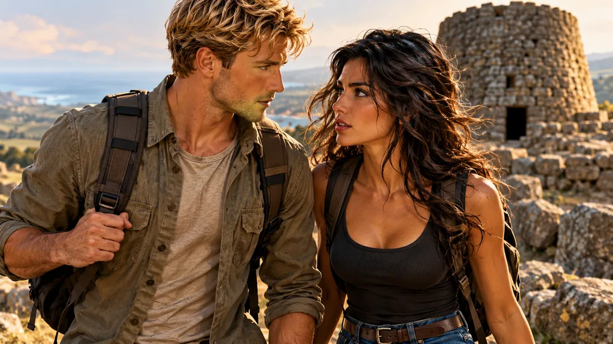
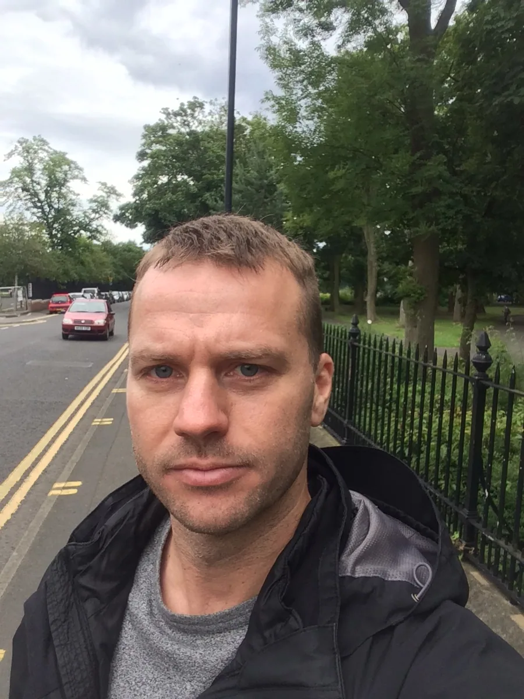
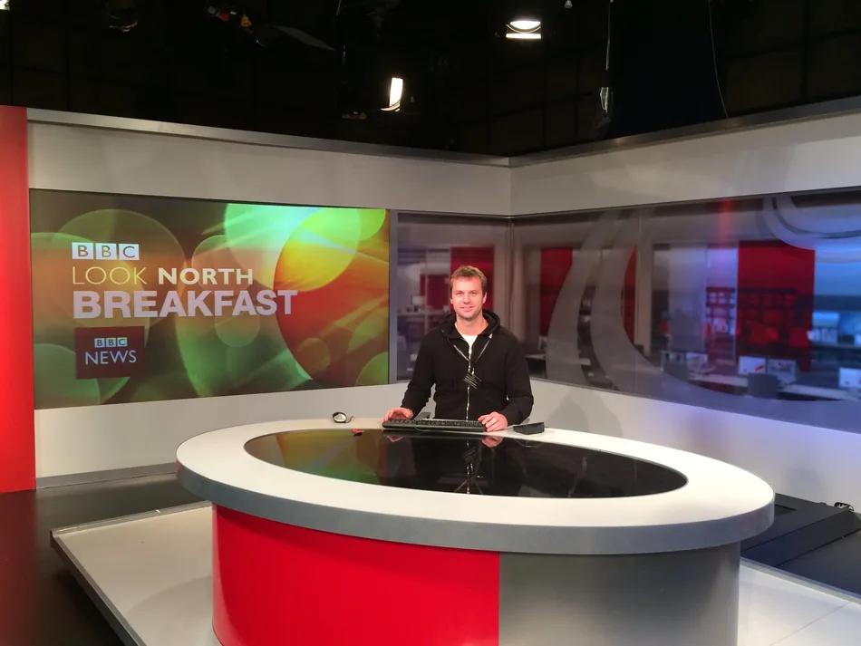
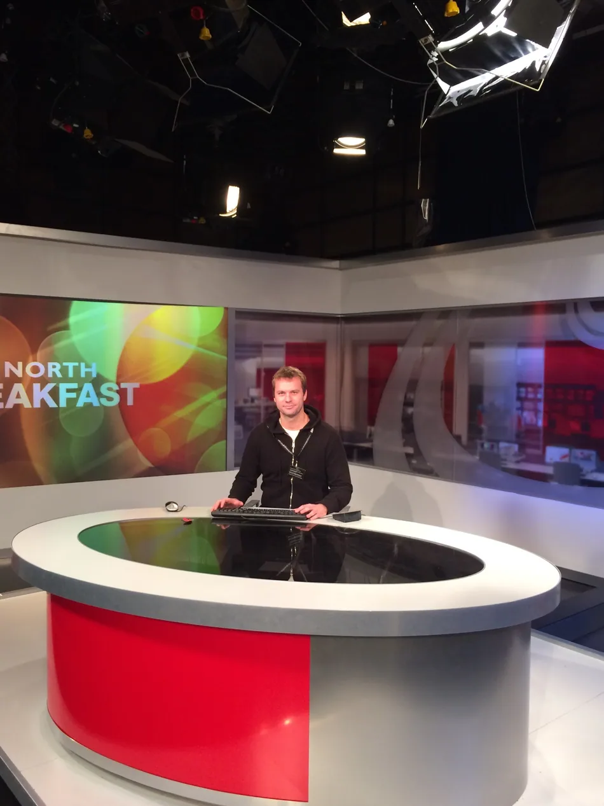

El futuro de la vida
Genética, evolución y la capacidad de adaptarnos a un planeta transformado.
Una historia sobre el origen, el amor y la supervivencia. Cuando todo lo conocido desaparece, ¿qué significa volver a ser humanos?

Tras un accidente inexplicable en un antiguo nuraghe de Cerdeña, Mike y Melisa despiertan en un mundo que ya no reconocen. Han transcurrido siglos. La humanidad ha desaparecido y la naturaleza ha recuperado el espacio que antes le fue arrebatado.
Sin referencias y con apenas lo que recuerdan, deberán aprender a sobrevivir bajo nuevas reglas. Pero la supervivencia no será suficiente: la memoria, la tecnología y los vínculos humanos los enfrentarán a decisiones que podrían cambiar el destino de nuestra especie.
«¿Merece la humanidad una segunda oportunidad?»
Una novela que entrelaza aventura, ciencia, inteligencia artificial, amor, ética y esperanza.

Un relato de ficción que invita a pensar en lo que perdura cuando nuestra civilización desaparece.
Genética, evolución y la capacidad de adaptarnos a un planeta transformado.
La memoria tecnológica y los límites de lo que entendemos por humanidad.
Las decisiones personales cuando el futuro de la especie está en juego.
El encuentro entre un pasado milenario y una Tierra que sigue adelante.
Ilustraciones que evocan personajes, escenarios y momentos del viaje. Pulsa sobre cualquiera para ampliarla.
Tráilers y piezas audiovisuales vinculadas al universo de la novela.
Una presentación audiovisual de NURAGHE.
Una mirada a sus personajes y escenarios.
Una felicitación desde el universo NURAGHE para celebrar las historias que nos permiten imaginar otros futuros.
Un adelanto breve para compartir.
Tres piezas visuales sobre la fuerza de la naturaleza, uno de los grandes temas de la novela.
La arquitectura milenaria de Cerdeña inspira el punto de partida de esta historia. Fotografías del autor y de los enclaves que evocan el misterio de la novela.

Doctor en Biología y Premio Extraordinario de Doctorado en Microbiología por la Universidad de León, especializado en el estudio de bacterias productoras de antibióticos.
Ha desarrollado su actividad científica en España, Países Bajos, Reino Unido y Lituania. Trabajó durante cuatro años en el Centre for Bacterial Cell Biology de la Universidad de Newcastle y es autor de más de cincuenta publicaciones científicas, además de participar en patentes y proyectos de investigación.
Actualmente es profesor en la Universidad de Oviedo. En su primera novela, NURAGHE: el origen de una nueva humanidad, une su experiencia científica con una reflexión literaria sobre la identidad, el amor, la pérdida, la ética y la esperanza.
Imágenes de intervenciones y apariciones en medios de comunicación.


NURAGHE: el origen de una nueva humanidad · Fernando Santos Beneit. Segunda edición, ISBN 979-8259006522.